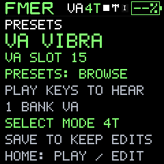
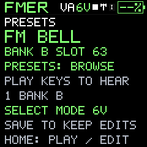
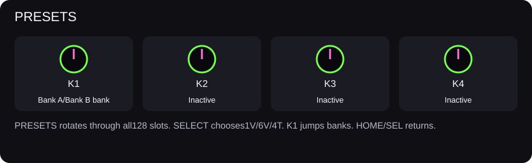
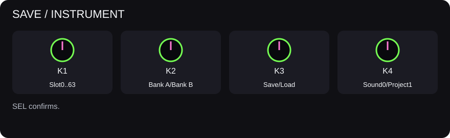
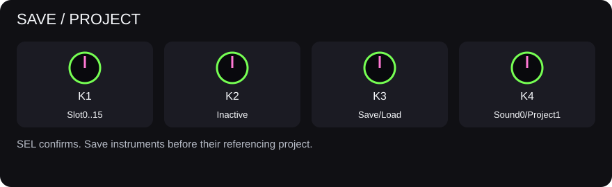

Companion
Sound banks and instrument slots
DEFAULT and USER are both editable. Reset actions have deliberately separate scopes.
There are 64 DEFAULT and 64 USER instruments. The PC bank file and hardware banks are independent. In the PC file DEFAULT is 0–63 and USER is 64–127; the device protocol uses USER 0–63 and DEFAULT 64–127. The app translates these positions and labels the destinations.
Rename changes the native ten-character ASCII instrument name. Copy duplicates into a chosen destination; review an occupied destination before replacing it. PC Move requires a populated USER source and an empty destination. Swap exchanges two entries. Delete is available for PC USER entries; DEFAULT must remain populated. PC bank Undo reverses one PC transaction.
- Reset to FMER Default: restore the 64 DEFAULT instruments to the supplied profile.
- Reset User Bank: restore independent copies of the 64 FMER defaults to USER.
- Clear User Bank: clear USER only, after explicit confirmation.
Choose PC or unit actions carefully: resetting a PC bank does not reset hardware. Hardware rename, copy and swap use native records and verification. A swap is two writes, not an atomic transaction. Existing projects keep their numeric references; swapping instruments changes what those projects will play. Current firmware has no individual hardware-slot delete operation, so the app does not simulate one by uploading an arbitrary blank patch.
The 64 original FMER default instruments are GPL-3.0-only. Their editable recipes and license are included with the companion. Imported sounds keep their original rights; see licensing and credits.
Deploy your PC bank
Choose Send sound to unit for one entry or Send this bank to unit for all populated slots in the displayed bank. The review defaults to the corresponding USER or DEFAULT destinations and lets you change them. Confirm only after checking every slot. Empty PC slots leave the unit unchanged. The complete unit is backed up before the first write; each write is verified and working state is restored with playback stopped. Projects keep their slot references, so rearranging sounds can affect existing arrangements. Local Undo does not undo hardware writes.






